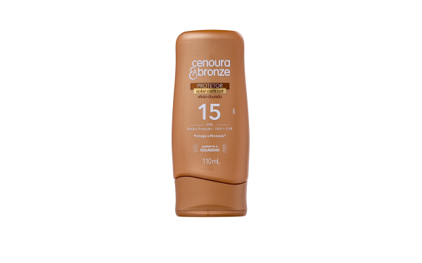
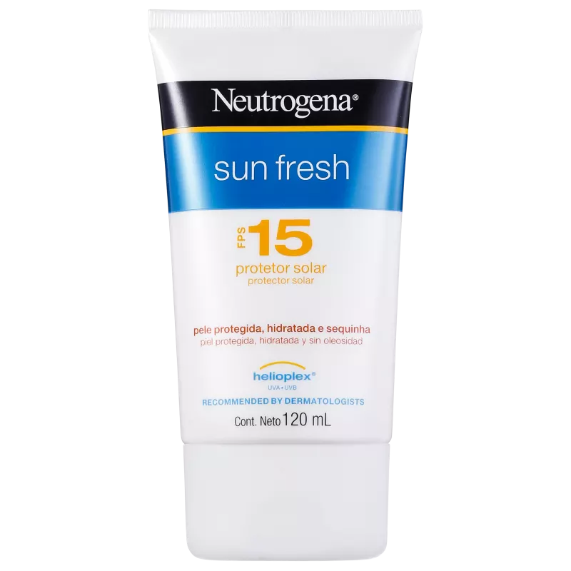

Como a pele reage ao sol
Desvendando o protetor solar
Pessoas de cabelos castanhos claros ou escuros, peles que bronzeiam para tons dourados geralmente possuem o fototipo de pele morena. Peles morenas têm mais resistência ao sol pois possuem mais melanina, elas se bronzeiam com mais facilidade e se queimam muito pouco. Para esse tipo de pele é indicado o protetor solar de FPS fator 15, tal valor indica que a pele vai demorar 15 vezes mais para se queimar.

